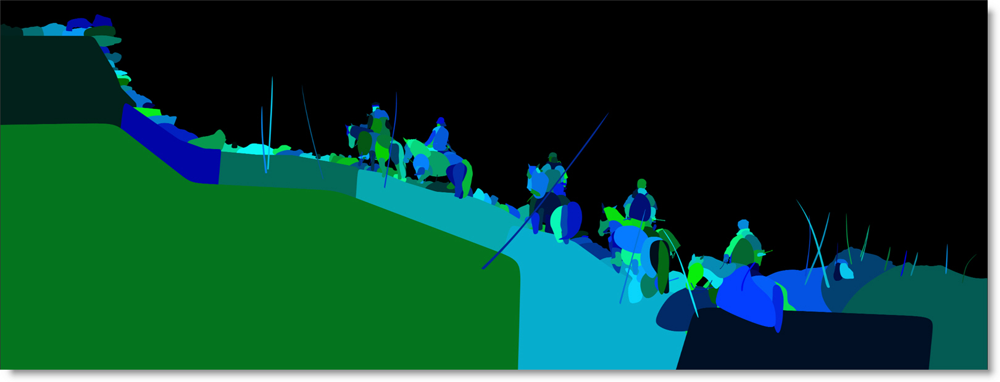

Output / Output Multi-Part
Description
Output
The Output node determines the file format, file name, disk storage location, and channels to be rendered. Every session has at least one Output node.
Output Multi-Part
The Output Multi-Part node is the same as the Output node, but has multiple inputs and renders EXR multi-part files. If there is more than one input, each output part name is appended with the upstream node's name.
The Output Multi-Part node can have multiple additional inputs. Right-click on the Output Multi-Part node and select Add Input. Right-click on an input port to remove it. You can add as many inputs as you want, but the inputs will get smaller.
Node Group
Image, Silhouette.
Format (Output Node Only)
The format setting allows you to select from various file formats. We currently can save to the following file formats: Cineon, DPX, GStreamer, IFF, JPG, OpenEXR, PNG, SGI/RGB, TIFF and TARGA.
Note: Format is missing from the Output Multi-Part node since it only renders EXR files.
Options
Adjusts options for the selected file format, the majority of which are compression related.
Automatic Data Window (EXR Only)
The Automatic Data Window rendering option looks at the alpha channel and determines the data window from that. Then, it writes only the pixels in the data window to an EXR file. For SXR files, it writes the combined data window between the two views. This greatly speeds up loading these files into a compositing system.
Go to the
Automatic Data Window tutorial to see how it works.
Cryptomatte (Output Multi-Part Node Only)
The Cryptomatte controls appear when the Roto node’s Data output is connected to the Output Multi-Part Data input. Cryptomatte is a tool created at Psyop by Jonah Friedman and Andy Jones designed to create ID mattes from the Roto node using organizational information available at render time. Cryptomatte generated images are very colorful, assigning each layer or shape a different random color.
In Silhouette, Roto shapes and layers are automatically assigned an ID and rank with layers and shapes being two entirely different sets of Cryptomatic data. Each layer gets its own ID based on its layer name while shapes get their own ID based on their shape name and layer hierarchy.
When the Roto node’s Data output is connected to the Output Multi-Part Data input, Cryptomatte layer and shape data are written into their own EXR channels. The Roto layers/shapes in the rendered Cryptomatte EXR file can then be selectively turned on or off in other products that support Cryptomatte like Nuke and After Effects.
Type
Determines whether layer, shape or layer+shape Cryptomatte data is written in the EXR file.
Layers
Layer Cryptomatte data is written in the EXR file.
Shapes
Shape Cryptomatte data is written in the EXR file.
Layers+Shapes
Layer and shape Cryptomatte data is written in the EXR file.
Layers Name
Defines the Cryptomatte layer name. Set to CryptoAsset by default, but the name can be changed.
Shapes Name
Defines the Cryptomatte shape name. Set to CryptoObject by default, but the name can be changed.
Ranks
When layers or shapes overlap, Cryptomatte ranks them by their position in the Object Window. Rank 0 is the highest rank and the order is determined by the object’s position in the Object Window. The higher the position in the Object window, the lower the rank. You can set up to 10 ranks.
File
Determines the directory and filename of the rendered files.
You can either type in the path and name in the File field or click the Browse icon on the right.
As far as filenaming is concerned, you only have to type in a name as periods, hash marks for padding and file extensions are not required unless you want to manually enter them. Silhouette uses the
Render Preferences to determine the default suffixes appended to the filename as well as file padding.
If you choose to manually enter the file padding and extension, the filename should have 3 things:
• The image name (duh).
• # for the frame placeholder.
• An extension: .exr = exr files, .cin = Cineon files, .tif = Tiff files, etc.
Therefore, if you enter a name something like test.####.exr,. Silhouette will render out test.0001.exr, test.0002.exr, etc.
Filename Customization
You can add environment variables to the filename using the sfx $(VARNAME) format. Two internal variables are defined for rendering, VIEW and ALPHA. $(ALPHA) expands to _alpha, but only when it is needed for naming external alpha. $(VIEW) expands to L or R, when appropriate.
The default filename expansion, when $(VIEW) and $(ALPHA) are not typed manually (i.e. by default), is this:
$(FILENAME_TYPED_BY_USER)_$(VIEW)$(ALPHA)
If not doing multiple view stereo rendering, it is:
$(FILENAME_TYPED_BY_USER)$(ALPHA)
Remember that $(ALPHA) expands to nothing when not needed.
Note: Make sure you type in the full path and base filename into the Output node File field and then Silhouette will do all the substitutions based on the environment variables.
Metadata
The Metadata field takes whatever you type and adds it to the comments metadata field in EXR files. The format for this field should be a comma-separated list of name=value pairs. For instance, shot=sc125, version=5.
Metadata Notes
• Metadata contained in EXR files is passed through to the rendered file.
• The metadata for the output node is built from the first input of any upstream nodes.
• All EXR string, int, and float attributes are passed through.
• The Output > Metadata property now gets broken down into distinct metadata attributes instead of going into the EXR comment field.
• Silhouette adds the following attributes for each output part: the output node name, the session name, the project name, the project bundle path and the current user.
Channels
RGB
Renders the RGB color channels.
Alpha
Renders the alpha channel.
Depth
Renders the depth channel.
Views
The Views pop-up menu allows you to control whether you render the Left, Right or both the Left and Right stereo views simultaneously when working in stereo sessions.
Both
Renders both the Left and Right stereo views with a _L and _R appended to the filenames.
Left
Renders only the Left stereo view with a _L appended to the filename.
Right
Renders only the Right stereo view with a _R appended to the filename.
Go to the Render Preferences to see how to modify the default suffixes appended to the filename.
Premultiply
Premultiplies the RGB channels by the alpha channel. This option is only valid if Channels > RGB and Alpha are selected.
Crop/Pad
When enabled, the output is cropped/padded to the session size. This becomes relevant when using a ROI (Region of Interest).
Note: Crop/Pad is missing from the Output Multi-Part node since EXR files save the ROI (Region of Interest) as an output EXR data window.
Sample
The Sample field displays all of the files that will be produced by the node.
Render
Opens the Render Options window where rendering is initiated.
See the
Render chapter for more information.